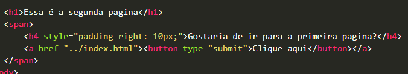
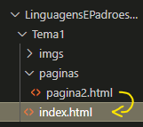

Essa é a 2ª página, e está colocada numa pasta, por isso ../ significa "voltar 2 vezes pra tras"
 
Essa é a segunda página.
Gostaria de ir para a primeira?
Clique aqui
Conheça os Estilos em Cascata:
1. Estilo Inline
Clique aqui
2. Estilo Locais/Internos
Clique aqui
3. Estilo Externo
Clique aqui